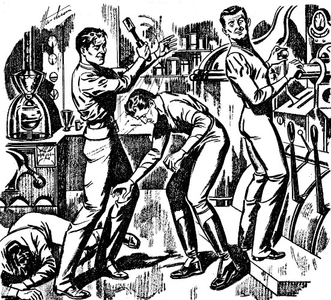

[Transcriber's Note: This etext was produced from
Startling Stories, July 1947.
Extensive research did not uncover any evidence that
the U.S. copyright on this publication was renewed.]
Doug Norris hesitated for an instant. He knew that another movement might well mean disaster.
Here deep in the cavernous interior of airless Mercury, catastrophe could strike suddenly. The rocks of the fissure he was following had a temperature of hundreds of degrees. And he could hear the deep rumble of shifting rock, close by.
But it was not these dangers of the infernal underworld that made him hesitate. It was that sixth sense of imminent peril that he had felt twice before while exploring the Mercurian depths. Each time, it had ended disastrously.
"Just nerves," Norris muttered to himself. "The uranium vein is clearly indicated. I've got to follow it."
As he again moved forward and followed that thin, black stratum in the fissure wall, his eyes constantly searched ahead.
Then a half-dozen little clouds of glowing gas flowed toward him from a branching fissure. Each was several feet in diameter, a faint-glowing mass of vapor with a brighter core.
Norris moved hastily to avoid them. But there was a sudden flash of light. Then everything went black before his eyes.
"It's happened to me again!" Doug Norris thought in sharp dismay.
Frantically he jiggled his controls, cut in emergency power switches, overloaded his tight control beam to the limit. It was no use. He still could not see or hear anything whatever.
Norris defeatedly took the heavy television helmet with its bulging eyepieces off his head. He stared at the control-board, then looked blankly out the window at the distant, sunlit stacks of New York Power Station.
"Another Proxy gone! Seven of them wrecked in the last two weeks!"
It hadn't just happened, of course. It had happened eight minutes ago. It took that long for the television beam from the Proxy to shuttle from Mercury to this control-station outside New York. And it took as long again for the Proxy control-beam to get back to it on Mercury.
Sometimes, a time-lag that long could get a Proxy into trouble before its operator on Earth was aware of it. But usually that was not a big factor of danger on a lifeless world like Mercury. The Proxies, built of the toughest refractory metals, could stand nearly anything but an earthquake, and keep on functioning.
"Each time, there's been no sign of falling rocks or anything like that," Norris told himself, mystified. "Each time, the Proxy has just blacked out with all its controls shot."
Then, as his mind searched for some factor common to all the disasters, a startled look came over Doug Norris' lean, earnest face.
"There were always some of those clouds of radon or whatever they are around, each time!" he thought. "I wonder if—" A red-hot thought brought him to his feet. "Holy cats! Maybe I've got the answer!"
He jumped away from the Proxy-board without a further glance at that bank of intricate controls, and hurried down a corridor.
Through the glass doors he passed, Norris could see the other operators at work. Each sat in front of his control-board, wearing his television helmet, flipping the switches with expert precision. Each was operating a mechanical Proxy somewhere on Mercury.
Norris and all these other operators had been trained together when Kincaid started the Proxy Project. They had been proud of their positions, until recently. It was a vitally important job, searching out the uranium so sorely needed for Earth's atomic power supply.
The uranium and allied metals of Earth had years ago been ransacked and used up. There was little on Venus or Mars. Mercury had much of the precious metal in its cavernous interior. But no man, no matter how ingenious his protection, could live long enough on the terrible, semi-molten Hot Side of Mercury to conduct mining operations.
That was why Kincaid had invented the Proxies. They were machines that could mine uranium where men couldn't go. Crewless ships guided by radar took the Proxies to the Base on Mercury's sunward side. From Base, each Proxy was guided by an Earth operator down into the hot fissures to find and mine the vital radioactive element. The scheme had worked well, until—
"Until we got into those deeper fissures with the Proxies," Doug Norris thought. "Seven wrecked since then! This must be the answer!"
Martin Kincaid looked up sharply as Norris entered his office. A look of faint dismay came on Kincaid's square, patient face. He knew that a Proxy operator wouldn't leave his board in the middle of a shift, unless there was trouble.
"Go ahead and give me the bad news, Doug," he said wearily.
"Proxy M-Fifty just blacked out on me, down in Fissure Four," Norris admitted. "Just like the others. But I think I know why, now!" He continued excitedly: "Mart, seven Proxies blacking out in two weeks wasn't just accident. It was done deliberately!"
Kincaid stared. "You mean that Hurriman's bunch is somehow sabotaging our Project?"
Doug Norris interrupted with a denial. "Not that. Hurriman and his fellow politicians merely want to get their hands on the Proxy Project, not to destroy it."
"Then who did wreck our Proxies?" Kincaid demanded.
Norris answered excitedly. "I believe we've run into living creatures in those depths, and they're attacking us."
Kincaid grunted. "The temperature in those fissures is about four hundred degrees Centigrade, the same as Mercury's sunward side. Life can't exist in heat like that. I suggest you take a rest."
"I know all that," Norris said impatiently. "But suppose we've run into a new kind of life there—one based on radioactive matter? Biologists have speculated on it more than once. Theoretically, creatures of radioactive matter could exist, drawing their energies not from chemical metabolism as we do, but from the continuous process of radioactive disintegration."
"Theoretically, the sky is a big roof with holes in it that are stars," growled Kincaid. "It depends on whose theory you believe."
"Every time a Proxy has blacked out down there, there's been little clouds of heavy radioactive gas near," argued Doug Norris. "Each seems to have a denser core. Suppose that core is an unknown radium compound, evolved into some kind of neuronic structure that is able to receive and remember stimuli? A sort of queer, radioactive brain?
"If that's so, and biologists have said it's possible, the body of the creature consists of radon gas emanated from the radium core. You remember the half-life of radon exactly equals the rate of its emission from radium, so there'd be a constant equilibrium of the thing's gaseous body, analogous to our blood circulation. Given Mercury's conditions, it's no more impossible than a jellyfish or a man here on Earth!"
Kincaid looked skeptical.
"And you think these hypothetical living Raddies of yours are attacking our Proxies? Why would they?"
"If they have cognition and correlation faculties they might be irritated by the tube emanations from the control-boxes of our Proxies," Norris suggested. "They get into those control-boxes and wreck the tube circuits by overloading the electron flow with their own Beta radiation!"
"It's all pretty far-fetched," muttered his superior. "Radioactive life! But all those Proxies blowing can't be just chance." He paused, then added gloomily, "But I can just see myself telling a World Council committee that your hypothetical living Raddies are what keep us from delivering uranium! Hurriman would like that. It would convince the Council that I'm as incompetent as he claims."
"He'll convince the Council of that anyway unless we deliver uranium from Mercury quickly," retorted Norris. "And we'll never do it till we get these Raddies licked. They're basically just complex clouds of radioactive gas. A Proxy armed with a high-pressure gas hose should be able to blow them to rags. Can't we try it, Mart?"
Kincaid sighed, and stood up.
"I was a practical man once," he said wearily, "and would have booted you out of here if you'd suggested such stuff. But I'm a drowning man right now, so I'll buy your straw. We'll send down a couple of Proxies armed with gas hoses and see how they make out."
Doug Norris eagerly went with his superior into the adjoining room where the operators of the Base Proxies were on duty.
"Norris and I will take over two Proxies at base," Kincaid told the sub-chief there.
Two operators took off their helmets and got out of their chairs. Norris took the place of one, donning the television helmet.
The control and television beams were on. The compact kinescope tubes in his helmet gave him a clear vision of the Base on Mercury, as seen through his Proxy's iconoscope "eyes".
There were no buildings, for Proxies didn't need shelter. The seared black rocks stretched under a brazen sky, beneath a stupendous Sun whose blaze even the iconoscope filters couldn't cut down much. The Base was just a flat area here beside the low rock hills. A crewless ship lay to one side, its hatches open. Near it were the supply-dumps of Proxy parts, the repair shops, the power plant.
"We'll get a couple of oxygen tanks from the supply dump and use them for your gas hose weapons," Kincaid was saying.
The Proxies they were guiding did not look like men. They looked like what they were—machines devised for special purposes. They were like baby tanks, mounted on caterpillar drives, each with two big jointed arms ending in claws, and a control-box with iconoscope eyes. They clamped on the high-pressure oxygen tanks, clutched the nozzles of the attached hoses, and rolled out of Base across the seared plain toward the black rock hills. In a few minutes, they entered the narrow cleft of Fissure Four.
Norris knew the way down here. He led, switching on his searchlight even though he didn't really need it. The Proxy's iconoscope eyes could see by the infra-red radiation from the superheated rock walls.
They finally reached the spot deep down in the fissure where his disabled former Proxy still stood. Doug Norris reached his jointed arms and quickly unclamped the shield of its control-box.
"Look there, Mart! The whole control's shot! They do it by overloading the tubes with their own Beta emanations, all right."
Kincaid's Proxy had elbowed close, its big iconoscope eyes peering closely. Here in the office, Kincaid uttered a grunt.
"That still doesn't prove the gas that did it was living. Instead of your hypothetical Raddies, it could be—"
"Look there!" yelled Doug Norris suddenly. "There they come again!"
Three of the glowing gaseous things were flowing toward them along the fissure. They poised for a moment in a lifelike way, and then swept forward.
"Your gas hose!" yelled Norris to the man beside him. "Don't let them get near you!"
The Raddies were advancing in a deliberate way. In spite of the time-lag, Norris tried to raise his gas hose and trigger it. There wasn't time. The eight-minute lag between his action and the result out there on Mercury was fatally long. The glowing Raddies were flowing up around the Proxies.
Doug Norris was momentarily dazzled by the brilliance of the Raddy that enveloped his Proxy's control-box. It was like looking into a star to look into the glowing, pulsing core of the thing.
His senses reeled queerly as he stared, hypnotized by the swirling bright gas and the starlike, throbbing core. He sensed dimly that that core was a kind of life possible on no terrestrial planet, a crystalized gaseous neurone structure that used its own radon emanations as a body.
He felt his senses staggering, darkening. It was as though he were hypnotized by the brilliance of that pulsing core of light, as though it were probing excruciatingly into his brain.
Then Doug Norris came out of his queer daze to find himself sitting there with his helmet dead. He could see nothing. His movements of the Proxy controls yielded no response.
"Blacked out, both our Proxies!" Kincaid exclaimed, dazedly taking off his own helmet. "And we got some kind of kick-back shock."
Norris, still badly shaken, nodded unsteadily. "There must have been a kick-back along the control beam when they blew the control-boxes. The circuit breakers may have been slow." He added quickly, "But you know now I was right! Those Raddies are living things, that instinctively attack our Proxies!"
Kincaid frowned. "It looks like it. But no gas hose or any other weapon will work against the brutes. The time-lag makes it impossible to use weapons. Our only chance is to seal and ray-proof the Proxies' control-boxes against them. That'll take time. But it's our only chance to get uranium out of there, and it's got to be done before Hurriman's clique gets the Council on our tail. I'll have the boys bring the Proxies all back to Base at once."
Norris followed his chief back to his office. Winters, the office clerk, was waiting there for them, and looking anxious.
"A bulletin just came over the news tape, Chief," he told Kincaid. "Here it is."
Mart Kincaid read the tape, and his square shoulders seemed to sag a little. He looked at them heavily.
"We won't need to worry any more about your Raddies, Doug. World Council has just passed Hurriman's motion requesting an immediate investigation of Proxy Project. It will begin tomorrow." He added tonelessly, "You know what that means. When they find we've lost nine valuable Proxies out there on Mercury without getting any uranium at all yet, we'll be thrown out."
"Blast Hurriman!" Doug Norris raged. "The Proxy Project has been your work from the start! You sweated to develop the things. Now because there's a hitch, a bunch of bumbling politicians take it over!"
"It's all in a lifetime," Kincaid shrugged. "Winters, you tell the boys. Have them pull their Proxies back to Base, and go home." He sat down slowly in his chair then, and stared at the wall. "So it's over. Well, right now I'm too tired to care."
Norris felt heartsick. "Isn't there any chance of stalling them long enough to try our idea of rayproofing the Proxies?"
"You know there isn't," said his superior. "It'd take days to do that job. Even if it worked against the Raddies, it'd take weeks more to get out uranium. And Hurriman's bunch won't wait weeks."
He looked at the sick face of the younger man, then opened a desk drawer and took out a bottle of Scotch and glasses.
"Here, have a drink," he ordered. "You're a little young yet, and you take these things too seriously."
Norris unhappily drank the Scotch. But his nerves, still shaken by that queer kick-back shock from the beam, didn't relax much.
"Mart, your calmness isn't fooling me," he said. "I know how much the Proxies meant to you, the dreams you had of operating Proxies on every planet man couldn't visit, even on worlds of distant stars."
Kincaid shrugged as he poured himself a drink. "Sure, I wanted all that. But since when have scientists ever been able to buck politicians?"
Darkness pressed the windows as night gathered. They sat silently in the darkening office drinking the Scotch and looking at the tall, lighted stacks of the distant New York Power Station.
Doug Norris found no comfort in the liquor's sting. His sense of injustice deepened. The Proxies were Kincaid's, but just because he couldn't produce uranium fast enough, they would be taken away from him.
He said so, bitterly and at length. Kincaid only shrugged wearily again.
"Forget it, Doug. Have another drink."
Norris discovered with mild surprise that the bottle was empty.
"We must have spilled some of it," he said a little thickly.
"There's another bottle in the drawer," Kincaid grunted. "They were for the Project party next week, but that's all off now."
Norris opened the other bottle and generously refilled their glasses. He sat down beside Kincaid, who was looking broodingly from the window at the distant atomic power plant. Despite the warm physical glow he felt, Doug Norris was unhappier than before. A new, poignant sorrow had risen in him.
"You know, Mart, it isn't only what Hurriman's doing to the Project that's got me down," he said sorrowfully. "It's what happened to old M-Fifty today."
"M-Fifty?" Kincaid inquired. "You mean that Proxy you lost this afternoon?"
"Yes, he was my special Proxy for all these months," Doug Norris said. "I got to know him. He was always dependable, never jumped his control beam, never acted cranky in a tight place." His voice choked a little. "I loved that Proxy like a brother. And I let him down. I let those Raddies wreck him."
"They'll fix him up, Doug," said Kincaid, a rich sympathy in his slightly thickened voice. "They'll make him as good as new when they get him back up to Base."
"Yes, but what good will that do if I'm not here to operate him?" cried Norris. "I tell you, that Proxy was sensitive. He knew my touch on the controls. That Proxy would have died for me."
"Sure he would." Kincaid nodded with owlish understanding. "Here, have another drink, Doug."
"I've had enough," Norris said gloomily, refilling their glasses as he spoke. "But as I was saying, that Proxy won't run for a bunch of politicians and their ham-handed operators like he ran for me. He'll know that I'm gone, and he won't be the same. He'll pine."
"That's the way it goes, Doug," Kincaid said sadly. "You lose your best friend—I mean, your best Proxy—and I lose my Project, just because we can't furnish enough uranium for power over there."
He gestured bitterly toward the distant stacks of New York Power Station that soared like towers of light in the distant darkness.
"You know, I've got an idea in my mind about that," Kincaid added slowly, as he stared at those towers.
Doug Norris nodded emphatically. "You're dead right, Mart. You're absolutely right."
"Now wait, you didn't hear my idea yet," Kincaid protested a little foggily. "It's this—we're losing the Project because we can't furnish enough uranium for power. But suppose they didn't need uranium for power any longer? Then they'd let us keep the Proxy Project!"
"Exactly what I say!" Norris declared firmly. "There's just one thing for us to do. That's to find a way to produce atomic power from some commoner substance than uranium. That'd solve our whole problem."
"I thought I was the one who said that," Kincaid said, puzzled. "But look—what fairly common metal could be used to replace uranium in the atomic piles?"
"Bismuth, of course," Norris replied promptly. "Its atomic number is closest to the radioactive series of elements."
"You took the words right out of my mouth!" Kincaid declared. "Bismuth it is. All we have to do is to make bismuth work in an atomic pile, then we can run the Proxy Project without this everlasting nagging about supplying uranium."
Doug Norris felt a warm, happy relief. "Why, it's simple! We should have thought of it before! Let's get some bismuth out of the supply room and go over to the Power Station right now!" He leaped to his feet, eagerly, if a trifle unsteadily. "No time to waste, if the Council committee's to be on our necks tomorrow!"
Doug Norris felt like singing in his wonderful relief, as he and Kincaid went down through the now deserted Project building to the supply room. In fact, he started to raise his voice in a ribald ballad about a Proxy's adventure with a lady automaton.
"You mus' have had a trifle too much Scotch, Doug," Kincaid reproved him, with owlish dignity. "Such levity isn't becoming to two scientists about to make the mos' wonderful invention of the century."
They got one of the heavy leaden cylinders used for transport of uranium and filled it carefully with powdered bismuth. Then, in Kincaid's car, they drove happily toward the big Power Station.
The guards at the barrier gate knew them both, for it was nothing new for Proxy Project men to bring uranium over to the Station. They let them through, and the car eased along the straight cement road.
The huge, windowless buildings that housed the massive uranium piles were a mile beyond. But no one went near those tremendous atomic piles. Everything in them had to be handled by remote control by the few technicians in Headquarters Building who kept them operating.
"Mart, isn't it queer nobody ever thought of usin' bismuth instead of uranium, before now?" Norris asked, out of his roseate glow.
"Scientists too c'nservative, that's the trouble," Kincaid answered wisely. His voice soared. "We're about to launch a new epoch! No more uranium shortage to worry 'bout! No more politicians botherin' the Project!"
"And I'll be able to fix up old M-Fifty and run him myself again," added Doug Norris. He choked up once more. "When I think of that Proxy that was like a brother to me, lyin' down in that lonely fissure with the Raddies gloatin' over him—"
"Don't think about it, Doug," begged Kincaid, with tender sympathy. "Soon's we get these atomic piles changed around, we'll go back and get good old M-Fifty up again and fix him good as new."
That promise cheered Norris' grieving mind. He got out and helped Kincaid carry the heavy lead cylinder into Headquarters Building.
The technicians they passed in the lower rooms saw nothing surprising in the two Project men staggering along under the weight of the cylinder. Nor did Petersen and Thorpe, at first.
Petersen and Thorpe were the two technicians on duty in the big, sacred inmost chamber of controls. Visors here gave view of every part of the distant, mighty atomic piles—the massive lead towers that enclosed the graphite and uranium lattices, the gas penstocks that led to giant heat turbines, the gauges and meters. And the banks of heavy levers here could switch those lattices, make any desired change in the piles, without the necessity of a man entering the zone of dangerous radiation.
Petersen had surprise on his spectacled, scholarly face as he greeted the two scientists.
"I didn't know you had another uranium consignment for us," he said.
Kincaid helped Norris place the lead cylinder in the breech of the tube that would carry it mechanically to the distant pile.
"This isn't uranium—it's better than uranium," Kincaid announced impressively.
"What do you mean, better than uranium?" Petersen asked in a puzzled tone. He opened the end of the lead cylinder. "Why, this stuff is bismuth! What is this, a crazy joke?"
Young Thorpe had been staring closely at Kincaid and Norris.
"They're both plastered!" he burst out.
Kincaid drew himself up in an unsteady attitude of outraged dignity.
"Tha's what thanks we get," he accused thickly. "We come here to make a won'erful improvement in your blasted old atomic piles, and we get insulted."
"Thorpe," Petersen said disgustedly, "get them out of here, and ... Look out!"
Doug Norris had casually taken the heavy metal handle off one of the big levers. He tapped Thorpe on the head with it just as Petersen uttered his warning cry. The young technician slumped.
Petersen, suddenly pale, darted toward an alarm button on his desk. But before he reached it, Norris' improvised blackjack tapped his skull. And Petersen also sagged to the floor.

Before Petersen could reach the alarm button, the blackjack hit him.
Norris looked triumphantly at Kincaid, with a warm feeling of righteous virtue.
"They won't bother us now, Mart. I just put them out for a little while without hurting 'em."
"Quick thinking, Doug!" Kincaid approved warmly. "Can't let reactionaries obstruc' course of scientific progress. We'd better tie 'em up in case they come around too soon."
Norris helped tie the two unconscious men with lengths of spare cable. Then he and Kincaid stood swaying a little as they owlishly inspected the controls of the mighty atomic piles.
Norris knew a good bit about those controls. He had been here many times, and Petersen and the other technicians had liked to talk. The trouble was, that right now his thoughts all seemed a little foggy.
"What we got to do," Kincaid said ponderously, "is change 'round the atomic pile setup so it'll handle bismuth instead of uranium. Right?"
"Right!" Norris approved enthusiastically. "That's going right to the heart of the problem, old pal!"
Kincaid seemed to blush in deprecation. "Oh, I jus' got an orderly mind. First thing now, is to shift the uranium lattices out of the piles."
He laid his hands on several of the levers, one after another. There was a low humming of machinery somewhere.
In the distant, towering structure, lattices loaded with uranium were being mechanically withdrawn to the pits beneath. But there was nothing happening here except on the panel of indicators.
Petersen came back to consciousness at that moment. Tied to a wall stanchion, he stiffened and his eyes bugged at them.
"What are you two doing?" he cried. "You're cutting off the power by pulling out those lattices!"
"Only temp'rarily," Norris assured him. "We'll shift empty lattices back in, and then load the bismuth into them."
Petersen uttered a howl of agony. "You maniacs will wreck the whole pile if you try a stunt like that! For heaven's sake, sober up and think what you're doing!"
"We're tryin' to think," Kincaid said sternly. "But how can we co'centrate, with you yelling at us?"
Petersen went from raging orders to agonized pleadings to tearful entreaty. The two ignored him completely.
"Le's see, now," Kincaid said, blinking. "We'll leave in the Number One uranium lattice after all. We'll need its neutrons to trigger the expanding series of graphite and bismuth lattices."
"We'll need two uranium lattices," Doug Norris corrected thickly. "One to trigger the first action, the other to pr'vide neutrons for the continuous shuttle that'll run the bismuth's atomic number up from eighty-three to ninety-four, right up through neptunium to plutonium."
"You're right," Kincaid agreed, hiccuping slightly. "I forgot 'bout that second lattice for a minute. Mus' be because of all the noise in here."
Petersen was still producing that noise, indeed. He had become louder and more frantic as he saw them shifting out the uranium lattices and replacing them clumsily with empty lattice-frames.
"Ten thousand scientists have been working ever since Nineteen-forty-five to find a way to use common elements instead of uranium in a pile!" he choked. "They can't do it. But two drunken Proxy men are going to try it!"
Norris hardly heard that stream of agonized accusation and entreaty, as he helped Kincaid shift in the empty lattices. He was mildly sorry that Petersen felt so disturbed. There was no reason for it. He and Kincaid knew just what they were doing.
Or did they? For a moment, a dim doubt crossed Norris' foggy mind. After all, he and Kincaid weren't physicists. Then he dismissed that doubt. He was sure of what they were doing, wasn't he?
Kincaid sat down unsteadily when they had the lattices changed.
"I feel a li'l shaky. 'S emotional reaction from great scientific achievement."
"Emotional reaction nothing—you're so plastered you're nearly out!" raged Petersen.
Kincaid dignifiedly ignored that. "Switch on the loader and shoot the ol' bismuth in there, Doug."
"Norris, don't do it!" begged Petersen hoarsely. "It means wrecking the pile, and maybe blowing up the whole Station!"
Again, Doug Norris' dim doubt bothered him. But then again he dismissed it. Everything was so beautifully clear in his mind. It had to work.
He switched on the loader. The lead cylinder of bismuth slid away into the tube that would carry it to the pile, where it would be automatically loaded into the new empty lattices.
"You fools!" choked Petersen. "I hope they hang you both for this! When that pile starts up, and blows—"
The operation of the great atomic pile was automatic from this point on. Minutes later, a bell rang and indicators clicked on.
"First uranium lattice has triggered off," said Kincaid, and nodded, pleased. "Now we'll get power—lotsa power."
"You'll get nothing but maybe an atomic explosion, in ten seconds!" cried Petersen, his face deathly white.
Doug Norris suddenly felt his doubt rise again and this time it overwhelmed him! All his former foggy confidence seemed to have left him as they completed their operations.
He was suddenly aware of the mad and ghastly thing that he and Kincaid had done. Why in heaven's name had they done it? What crazy quirk in their minds had made them do it?
Kincaid too was suddenly looking pale and queer.
"Doug, maybe we shouldn't have tried it."
"Look at those meters!" yelled Petersen, in a wild voice.
The technician's eyes were protruding as he stared at the big bank of ammeters that registered the output of the great turbines. The needles were jumping across the dials with swiftly increasing amperage.
"The pile is working!" yelled Petersen hoarsely. "That bismuth is actually producing atomic power!"
Doug Norris suddenly felt cold sober, and a little sick. He sat down shakily, and put his head in his hands.
Kincaid was staring blankly at the ammeters, while Petersen and Thorpe seemed to have gone crazy with excitement. When Petersen was untied, he grabbed Kincaid fiercely.
"How did you do it?" he cried. "Just what did you do to the pile?"
Kincaid stared at him blankly. "I don't know, now."
"You don't know?" Petersen almost screeched. "Man, you've stumbled on what the scientists have been hunting all these years—the hookup to use common elements in an atomic pile! You must have had something figured out beforehand!"
"We didn't!" Norris denied weakly. "We got a little plastered, and got this idea. We didn't know what we were doing."
Suddenly, Doug Norris stiffened. Remembrance that brought him jumping unsteadily to his feet had come to him.
"You couldn't have done a thing like this by sheer crazy accident!" Petersen was insisting. "You must have known how!"
"By heaven, I believe now that we did know what we were doing, in a queer sort of way!" Norris exclaimed shakily. He grabbed Kincaid's arm. "Mart, come with me! We're going back over to the Project!"
Petersen's dazed amazement was changing to exultation.
"Whatever you did, it's still working and looks like it'll work indefinitely! And we can study the hookup and learn how to duplicate it, even if we never completely understand it. You two maniacs are going to be famous!"
But Norris had already led the stupefied Kincaid out of the room.
All the way back to the Proxy Project, Kincaid kept dazedly repeating the same thing over and over.
"We must have been clear out of our heads to do a thing like that! But how is it that we were able to do it right?"
"Haven't you suspected the answer to that yet?" cried Doug Norris. "Don't you see why, as soon as our conscious minds were relaxed by a few drinks, we automatically went and performed an operation totally beyond present-day nuclear science? What happened to us just before we had those drinks? What happened when our Proxies met those Raddies down in the fissure?"
"The Raddies?" Kincaid repeated stupidly. "What could those brutes have to do with this?"
"We thought they were only brutes, a low form of queer radioactive life," Norris said. "But what if their weird minds are intelligent, supremely intelligent? An intelligence that doesn't operate for purposes or in ways like ours, but that's as high or higher than ours?"
He almost dragged the stunned Kincaid into the deserted office, to the control-boards of the Proxies at Base.
"Take over a Proxy and follow me," Norris ordered. "I've an idea that if we go down in that fissure again, we can prove it."
"Prove what?" Kincaid asked, but mechanically obeyed and took over a Proxy control.
Again, Norris and Kincaid guided their Proxies out of Base and across the seared Mercury plain toward Fissure Four. Norris peered down into the fissure as he advanced. Then as they glimpsed the wrecked Proxies they had previously left there, they also glimpsed glowing little clouds flowing rapidly toward them.
A Raddy lifted its glowing gaseous body to envelop the control-box of Norris' Proxy. Again, as he stared into the thing's brilliant, pulsing core, he felt his senses reel queerly. But this time, he knew beyond any doubt what it was.
"Hypnosis!" he yelled to Kincaid. "Hypnosis operating through our Proxies' eyes right back along the beam to our own eyes and brains! I thought so!" His shout died away as his brain reeled under the powerful hypnotic influence of the Raddy's pulsing, starlike core.
Hypnosis could operate by vision, everyone knew that. Nobody had dreamed of hypnosis operating across space by means of a linking television beam, but it was happening. For Doug Norris, resisting now with new-found knowledge, just dimly sensed the powerful hypnotic order the Raddy's pulsing brain was hurling into his own mind.
"You will not send your crude machines down here again to disturb our philosophical reveries!" the Raddy's hypnotic thought was sternly ordering him. "There is no further need. When we read from your minds that it was need for uranium for your primitive power plants that motivated your intrusions here, we gave your brains the post-hypnotic knowledge to improve those power plants so you would not need to come here again. So go, and do not return!"
Under that powerful hypnotic command, both Norris and Kincaid turned their Proxies and fled back up the fissure.
Not until they had reached Base again, not until they had ripped off the television helmets, did Doug Norris feel that powerful hypnotic command relax.
"It's as I suspected!" he cried. "It was the Raddies who put that knowledge in our minds! Who would know nuclear science better than they?"
Kincaid stared, his jaw dropping. "Then, to stop our bothering them, they did that by post-hypnotic command working back along our own Proxy-beams?"
"Yes!" cried Doug Norris. "Ironic, isn't it? They worked back along our own beams and made Proxies out of us!"